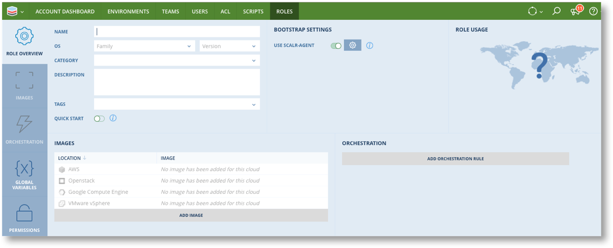
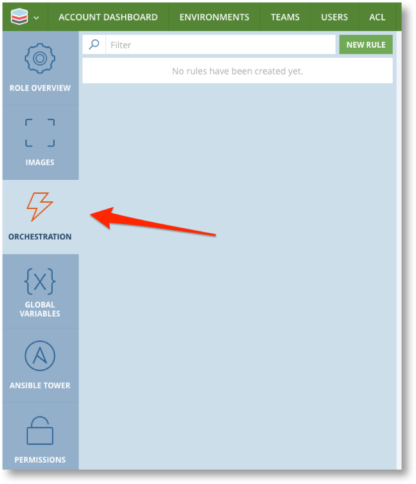
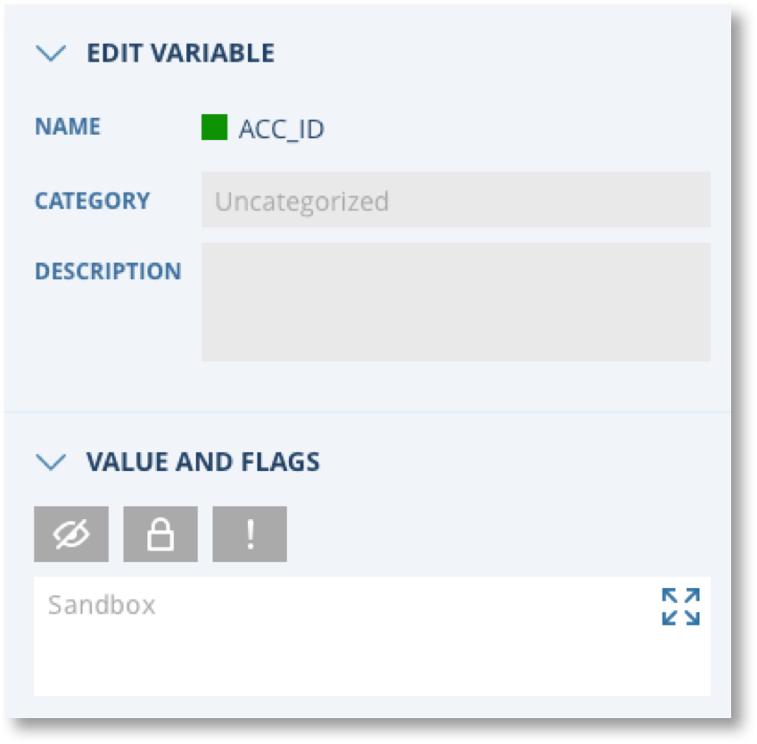
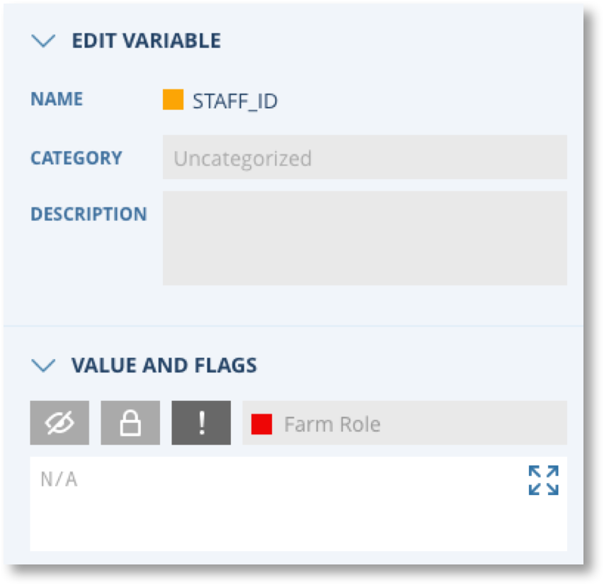
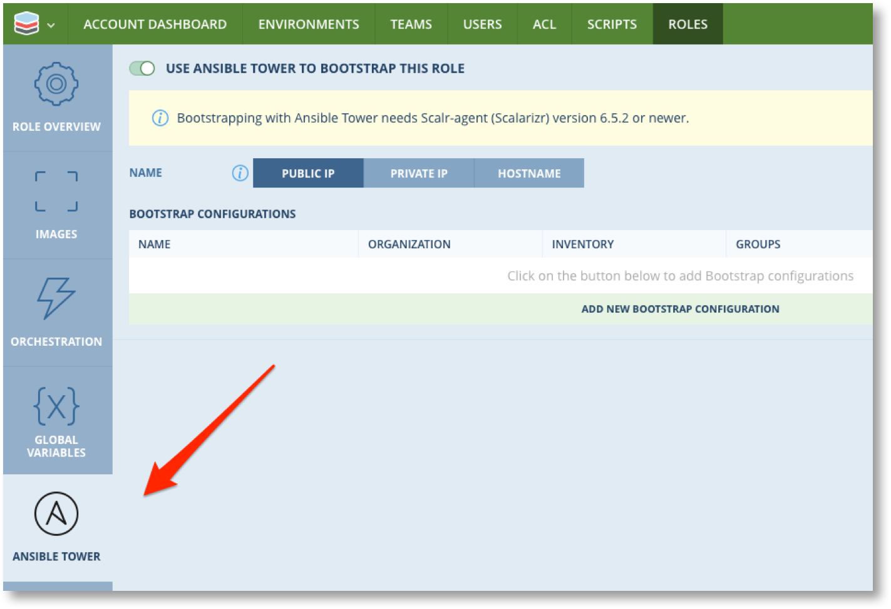
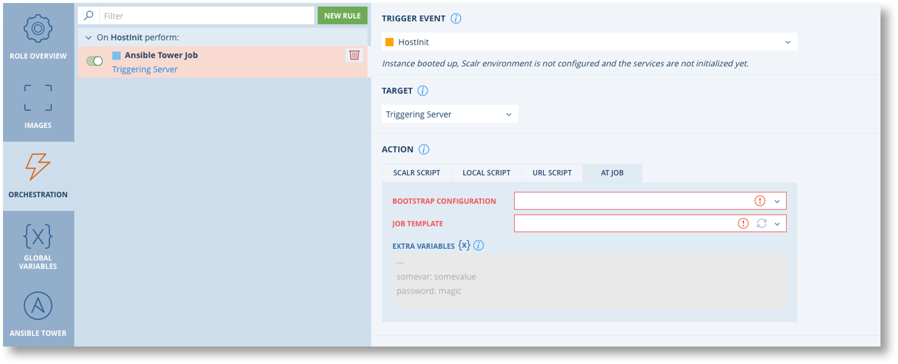
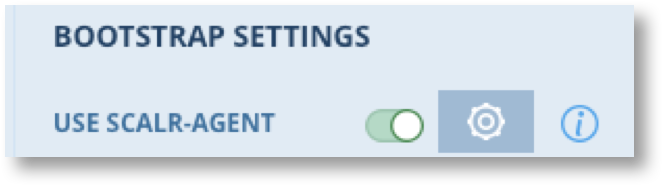
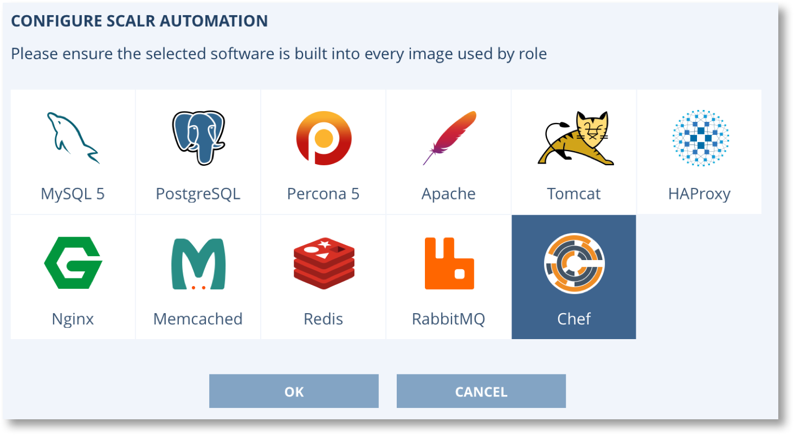

Creating Roles¶


Step two of using Scalr to configure and deploy infrastructure is to create Roles. Roles are the building block that define the characteristics of servers that are deployed by Scalr. In their simplest form Roles provide an abstraction layer over the top of the Images. A Role is linked to one or more similar Images, located in different clouds and/or locations, thus providing the flexibility for infrastructure designers and end users to chose the cloud and location for the resulting servers at the time they launch an application.
“Similar” Images are Images that are configured to provide the same behaviour and deliver the same service. Thus all similar Images will have
- The same base operating system and Version
- The same patch levels
- The same pre-installed and configured software packages
Roles can also include options to further manage the behaviour and configuration of servers.
- Orchestration rules that define actions (executed through Scripts) that take place at various lifecycle events throughout the life of a server.
- Global Variables that can be used to pass dynamic values to alter the configuration of servers and execution of Orchestration rules.
- Integration with Configuration Management tools like Chef and Ansible to perform the bootstrap and configuration of servers.
Roles can be created at any scope in Scalr and made available to lower scopes. Account scope roles can be given permissions to restrict which Environments they are available to. By default they will be available to all Environments in the Account.
Role functionality is accessed via Roles in the Main menu or Bookmarks bar at any scope. Note that you can jump straight to New Role from the main menu or click on “Roles” and then “New Role” at the top of the list.
{kind=link}
{kind=link}
You will now be presented with the New Role screen where you configure all the Role options
{kind=link}
| Parameter | Mandatory? | Details |
|---|---|---|
| Name | Yes | A meaningful name that typically includes the OS and version and main package e.g. “ubuntu-1404-haproxy” |
| OS Family and Version | Yes | This must match the OS Family and Version of the Images you wish to link to this role |
| Category | Yes | Provides grouping of roles when being selected in the Farm Designer. You can add your own Categories from Roles -> Role Categories menu |
| Description | No | Describes the purpose of the Role and any special details that may be relevant |
| Tags | No | You can include previously defined Policy Tags to associate the Role with governance policies defined in the Policy Engine. You can also add your own tags to help with role grouping related Roles and for use in Cost Management for cost reporting. |
| Quick Start | No | Enable this to include this role in the Quick Start menu of the Farm Designer |
| Use Scalr-Agent | No | Enabled by default and required for Role Orchestration and Auto Scaling. If this is disabled the “Configure Built-In Automation wheel” will be disabled but the option to Use Cloud-Init will appear. |
| Configure Built-In Automation wheel | No | Click on the wheel and select “Chef” to enable the Chef options for this role. This will make the Chef tab visible on the left side. You can only enable Chef when creating a new Role as it cannot be done after the role has been saved. See Note below. |
| Use Cloud-Init | No | This option only appears if “Use Scalr-Agent” is disabled. Enable this option to have Scalr work with Cloud-Init to configure servers. Once enabled the Configure button will appear to enable you to set the Cloud-Int Config |
| Images | Yes | You must link the Role to at least one Image (see below). When you click on ADD IMAGES you will only see Images with the same OS Family/Version that have Scalarizr or CloudInit installed. |
{kind=link}
Note
Built in Automations other than Chef will be deprecated in future release of Scalr. They will continue to work for existing roles but should now be replaced by user configured Orchestration Rules.
When adding Images to Roles you need to be aware of the different ways Images are configured in each cloud.
| Cloud | Image Configuration |
|---|---|
| AWS EC2 | Images are unique for every AWS location. You must add every similar Image in every location you want the Role to be enabled for. |
| Azure | Azure Image is common to all regions so only one Image needs be added to the Role |
| GCP | GCP Image is common to all regions so only one Image needs be added to the Role |
| Openstack | Images are unique for every Openstack. You must add every similar Image in every region you want the Role to be enable for. |
| VMware | Images are unique for every VMware location. You must add every similar Image in every location you want the Role to be enable for. |
Note
When you save a Role you will be taken back to the role list. To make further edits to a role select the Role to be edited and click the Edit  button.
button.
Role Orchestration¶
Orchestration rules define actions to be performed at specific events during the lifecycle of servers. Orchestration rules associated with a Role are inherited by Farm Roles that are created in the Farm designer or Farms created via Service Catalog Offerings.
To configure Orchestration Rules click on the Orchestration tab on the left side of the Role details screen.
{kind=link}
Note
Orchestration rules can be defined in many places in Scalr. What follows covers all aspects of rule configuration regardless of where they are configured.
Orchestration Rules are made up of three main elements.
| Trigger Event | The lifecycle event of the a server that will cause the Orchestration Rule Script to execute such as OnHostUp or BeforeHostTerminate |
| Target | Criteria for identifying the server on which to run the Script which need not be the triggering server and can be multiple servers |
| Action | The script, Chef Cookbook or Ansible Tower job to be run. |

You must create the Script and any Global Variables that are required before creating the Rule.
Trigger Event¶
First select the Trigger Event for this rule. The following table describes each event and the state of the Server when the event fires.
| Event | Description |
|---|---|
| BeforeInstanceLaunch | Scalr fires the BeforeInstanceLaunch Event after making an API Call to your Cloud Platform. |
| HostInit | The Instance finished booting and Scalr is now configuring the Environment and initializing Services. |
| IPAddressChanged | Public IP address of the instance was changed upon by reboot or within Elastic IP assignments. |
| EBSVolumeAttached | EBS volume was attached to the instance. |
| EBSVolumeMounted | An EBS Volume has been attached and mounted to the Instance. |
| BeforeHostUp | Time for user-defined actions before the instance will be added to DNS, Loadbalancers etc |
| HostUp | The Instance has booted and Environment and Services are running. Instance will now be added to Load Balancer, DNS Zone etc. |
| BeforeHostTerminate | The Instance is flagged for termination and will be terminated after 180 seconds. |
| HostDown | The instance will be terminated. |
| RebootComplete | The Instance has finished rebooting. |
| ResumeComplete | The instance was successfully resumed after a suspension. |
| HostInitFailed | Instance booted up but Scalr environment is not configured and the services are not initialized yet. |
| Custom Events | Any Custom Events defined at this scope or higher. |
| All Events | Rule will fire for any event including Custom Events. |
After an Instance finishes booting the OS, the Scalr Agent starts configuring your Environment in a certain order as follows.
- All EBS / Disk Routines are executed.
- Deployment Routines are executed.
- Server Configuration (including vhosts) Routines are executed. If you wish to work with Virtual Hosts, you can assign a Script to the BeforeHostUp Event.
Target¶
You must define the target for executing the script. The default is to execute only on the instance that triggered the event. The other options are as follows. Note that availability of targets depends on the scope at which the rule is being defined.
| Target | Scopes | Description |
|---|---|---|
| Triggering Server |   |
The script will only be executed on the server that triggered the event. |
| Triggering Server with <specified OS> | |
The script will only be executed on the server that triggered the event providing it is the specified Operating System. |
| All Servers in the Farm | |
The script will be executed on all running servers in the Farm. |
| All Servers of the Farm Role | |
Script will execute for all servers running from the same Farm Role as the triggering server in the Farm. |
| All Roles with Selected Tags | |
Script will execute for all servers running from Roles with the specified tag in the Farm. |
| All Roles with Selected OS | |
Script will execute for all servers in the Farm with the specified OS. |
| Selected Farm Roles | |
Script will execute for all servers in the given Farm Role(s) in the Farm. |
Action¶
There are three choices for the Action for a rule.
| Type | Scopes | Option | Details |
|---|---|---|---|
| Script | |
Scalr Script | A Scalr script previously defined at the current scope or higher. Higher Scope scripts must have shared  enabled. enabled. |
| Local Script | Script that will already be installed on the server. You must provide the full path to the script. | ||
| URL Script | Instructs Scalr to download the script from the specified URL and run it. | ||
| Chef | |
Override Runlist (Server) | If the Role is configured to bootstrap with Chef Server the rule can override the runlist defined at Role level. |
| Reconverge (Server) | If the Role is configured to bootstrap with Chef Server the rule can re-invoke the convergence actions. | ||
| Chef Solo | Specify a specific cookbook and runlist to use either from a URL or GIT | ||
| AT Job | |
(none) | If AT is configured to bootstrap the role you can chose a bootstrap config and job to execute for the rule. |
Advanced Configuration¶
The advanced configuration section allows you to control various aspects of how the Action is executed.
| Parameter | Description |
|---|---|
| Execution Mode | Blocking: Scalarizr will wait for your Script to finish executing before firing and processing further events |
| Non-Blocking: Scalarizr will not wait for your Script to finish executing before firing and processing further events | |
| Timeout | Length in seconds before the script should timeout. This should be increased for complex actions, especially those that downlada from the internet. |
| Order | Sequence in which rules must be executed. This defaults to the order in which the rules are created. |
| Run As | For Scripts and Chef only defines the user to execute the script as on the server. |
Global Variables in Roles¶
When defining Roles you can define new Global Variables for use in scripts etc as described in the Global Variables section. You may also need to set the value of Global Variables that have been defined at the same or higher scopes. Global Variables defined at the same or higher scope as the role are automatically associated with the Role and will be visible when clicking on the Global Variables tab of the Role screen.

If the value for a variable is already set then the Role can use that value or overwrite it if the variable is configured to allow it.
| Variable Unlocked. Role can set the value to be inherited by lower scopes, but ALL lower scopes can overwrite the value |  |
| Value can be set at any scope down to the specified scope. Role can set the value to be be inherited by the lower scopes. Only lower scopes as far as the specified scope will be able to overwrite the value. |  |
| Value must be set at this scope. A value must be supplied and an error will occur if you attempt to save the Role, save any Farm using the role, or launch a Farm that uses the Role if the value is not set. Lower scopes will NOT be able to overwrite |  |
{kind=link}
{kind=link}
Ansible Tower in Roles¶
Ansible Tower can be configured at Scalr or Account scope to be used as means to bootstrap servers. See Ansible Integration for more details.
If an Ansible tower server is configured at the or above the scope for the Role, the Ansible Tower tab will be available on the Role configuration screen. This option allows you to enable Ansible Tower Bootstrap for the Role and define bootstrap configuration to be used.
{kind=link}
At a minimum, this will ensure the server is added to the correct Organization, Inventory and Group. If you want to run a Job Template during the provisioning of the server, click on the Orchestration tab, then New Rule, select the Event, and then click on AT Job:
{kind=link}
Chef in Roles¶
Chef Servers can be configured at Scalr or Account scope to be used as means to bootstrap servers. See Chef Integration for more details.
If a Chef server is configured at the or above the scope for the Role, the tab will be available on the Role configuration screen. This option allows you to enable Chef Bootstrap for the Role and define either a Chef Server or Chef Solo Cookbook to be used. Within here you can add Chef Roles, Runlists, Cookbooks, and more. All Farm Roles that use this role will inherit the configuration. To add Chef to a role, you must click on the gear icon under Bootstrap Settings in the Roles page and enable Chef:
{kind=link}
Then select Chef when the Configure Scalr Automation pop up appears:
{kind=link}
Once that is enabled you will then be able to click on the Chef tab on the bottom left of the page which will bring up the pages below.
Chef Server:
{kind=link}
Chef Solo:
{kind=link}
{kind=link}